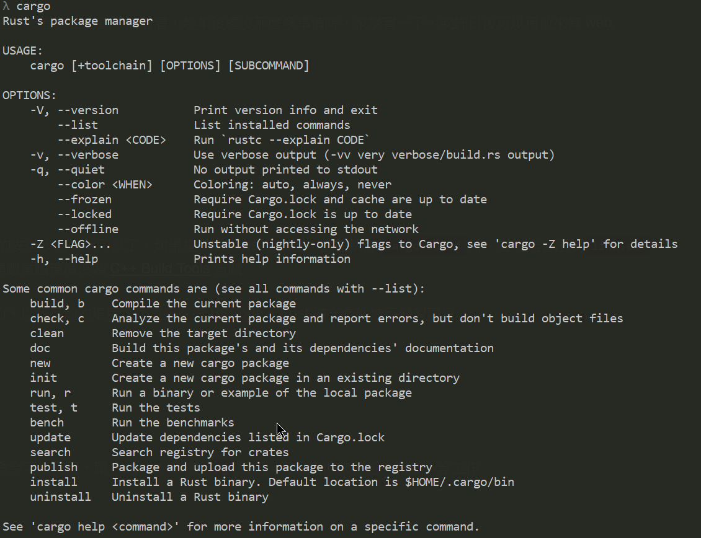
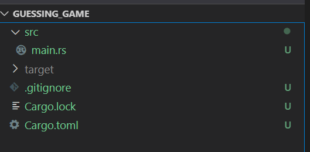
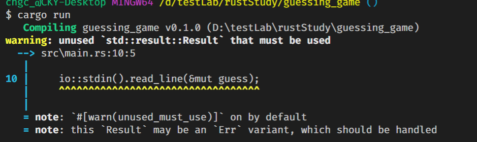
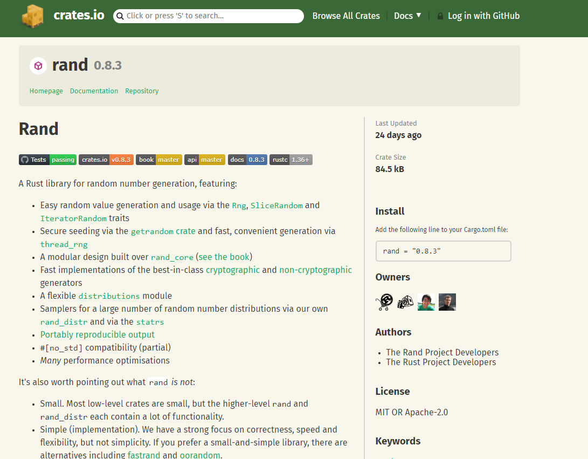
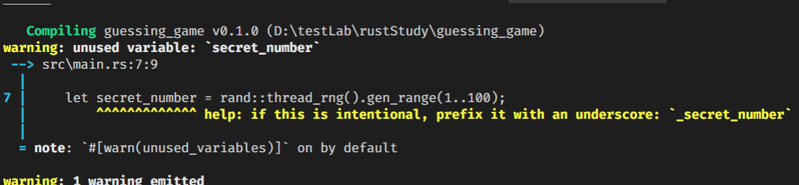
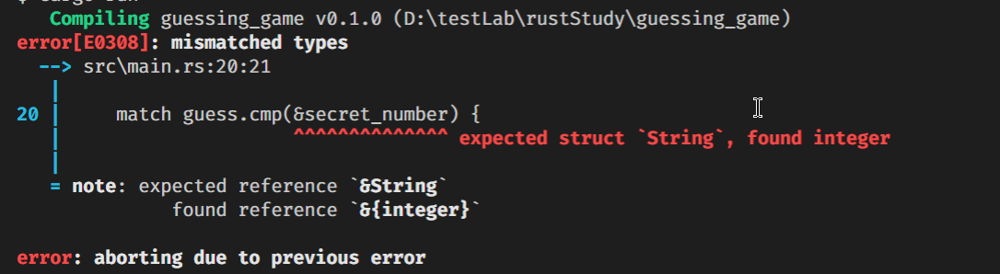
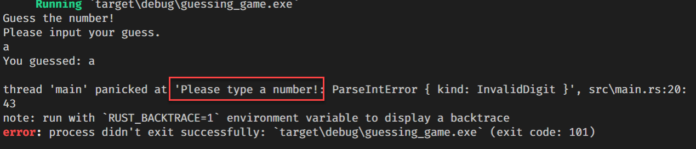

Rust 這語言關注他有一段時間，但都沒有真正的動手寫看看，趁年後還沒那麼多事情時，來學習一下，或許日後可以用他來寫 web assembly
環境安裝
Rust 的執行環境基本上就依官網的安裝步驟做就可以了，如果是 Windows 的環境，當在執行 cargo build 時，有可能會出現 link.exe 找不到的錯誤訊息，通常這個問題跟電腦環境沒裝 C++ Build Tools 有關
開發工具的部分，選擇性還蠻多的，以我目前的環境，是直接選擇 VSCode + Rust 擴充套件進行學習環境
建立新專案
安裝完 Rust 後，會有 cargo 的命令可以使用，跟 Angular CLI 的 ng 類似，可以用他來打包、開發、等工作

建立專案的指令是 cargo new <project_name>，建立完成後專案資料夾下會有這些檔案

Cargo.toml: 用來記載專案資訊，相依套件等資訊，類似package.jsonCargo.lock: 用來紀錄套件安裝等資訊，類似package-lock.jsontarget資料夾：建置後(cargo build) 的輸出資料夾src資料夾：程式放置位置src/main.rs: 主要進入點
想執行程式時，使用 cargo run 的指令就可以了
猜數字(官方範例)
當打開 main.rs 檔案，裡面只有一個 function ，這個是程式的初始執行的方法
1 | fn main() { |
如果要從 console 上接收到使用者輸入得資料時，就要使用到內建的 io 方法
1 | use std::io; // 引用 package, library, namespace (就那個意思) |
-
line 8: 建立一個可以被變更的文字型態的變數，
- 使用
mut關鍵字設定變數為可變更的
- 使用
-
line 10 ~ 11: 接收使用者輸入得資料，並存放到
guess變數中- 使用
&建立一個 reference
- 使用
-
line 12: 需處理當
read_line失敗時需要回傳什麼結果，這是 Rust 處理 Exception 的方式，可以思考成這樣1
2
3
4
5
6string guess;
try {
guess = Console.Readline();
} catch {
guess = "Failed to read line";
}-
必須處理 Error 的部分，不然 compiler 會跟你抱怨

-
-
line 14: 使用
{}來空出變數要顯示的位置，當有多個時，會依序顯示1
println!("x: {}, y: {}", x, y);
引用套件
使用其他相依套件的方式很簡單，就在 Cargo.toml 中將套件名稱與版本設定上去即可，類似 npm 的概念，rust 也有自己的 package 管理機制，可以上 crates.io 搜尋套件，<在這練習範例中，使用了 rand 這一個 package

搜尋後再右邊有 install 的方式，只要複製貼到 Cargo.toml 的 dependencies 下即可
使用套件
在 main.rs 裡要建立一個介於 1~ 100 的亂數，寫法如下
1 | use rand::Rng; |
※備註一，Rust 不喜歡沒有使用的東西留在程式碼內，如果有那種沒使用的變數發生時，編譯時會出現下面的警示訊息

比較數字
Rust 有內建比較數字的方法 std::cmp::Ordering;
1 | use std::cmp::Ordering; |
-
match: Pattern Matching 的關鍵字 (很常出現的一種寫法) -
secret_number為數字型，guess為文字型，line 10 的比較會跳出錯誤訊息
基於上面的原因，我們需要將 guess 轉換成數字型
1 | let guess: u32 = guess.trim().parse().expect("Please type a number!"); |
-
trim()會將\n或是空白給清除掉 -
parse()將文字轉換成數字，由於宣告變數時，有指定型別,: u32，所以會轉換成u32型別 -
expect(....)，當發生 exception 時，會顯示裡面的文字
持續進行遊戲直到猜對
1 | loop { |
- line 1：新增 loop 迴圈
- line 17: 猜對時跳出迴圈
上面的寫法針對 line 12 輸入不是可轉換成數字的情況下，還是會被迫結束程式，所以要修正一下寫法
1 | let guess: u32 = match guess.trim().parse() { |
再次透過 pattern match 的方式，調整遇到 Err 時要做的行為，這樣就不會因為轉換失敗造成程式被強制中斷了。
小結
到這邊是官網提供的一個算是完整的簡單範例，也可以從中觀察到 Rust 這語言的特性，自己在第一次寫時並沒有遇到太卡的地方，很多觀念都可以從其他語言延用，可以算是一個嚴謹但又不會讓你寫得很囉唆。第一印象是好的
接下來就會往更深層去瞭解這語言的其他部分，例如型別、流程控制、跟程式結構等，下篇見。